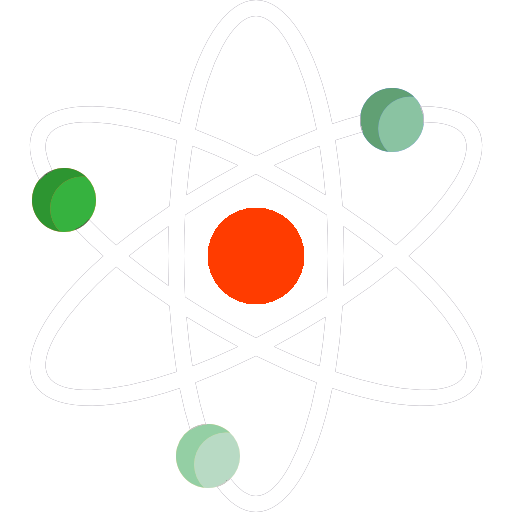

<nav class="navbar navbar-expand-lg navbar-dark bg-dark fixed-top">
  <a class="navbar-brand" href="#">
    
  </a>

  <div class="navbar-collapse">
    <ul class="navbar-nav ">
      <li class="nav-item" routerLinkActive="active">
        <a class="nav-link" routerLink="worldmap">World Map</a>
      </li>
      <li class="nav-item" routerLinkActive="active">
        <a class="nav-link" routerLink="dashboard">Dashboard</a>
      </li>
      <li class="nav-item" routerLinkActive="active">
        <a class="nav-link" routerLink="graph1">Graph 1</a>
      </li>
    </ul>
  </div>
</nav>
